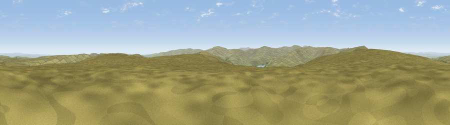

Viewpoint near Allenheads
#12242 in England · top 34% of its area beats it · near AllenheadsThe view, rendered

A 360° render of this exact spot computed from the terrain model, tree cover and land cover — summer colours, afternoon light, calibrated against photographs of famous viewpoints. Real trees, hedges and buildings will differ in detail.
The panorama
Grey silhouette: terrain skyline in each direction (720 bearings, Earth curvature and refraction included). Dashed green: skyline with trees (+15 m) and buildings (+8 m) as obstacles. Blue strip: how far the ground is visible on each bearing.
Where the view opens
Wedge length = distance to the farthest visible ground on that bearing (vegetation-aware). Rings at 10, 25 and 50 km.
What fills the view
98% grassland · 1% woodland
Angular shares of the visible panorama (visual magnitude), not map area. Landscape diversity 0.04 (0–1 Shannon).
Key numbers
More beautiful places nearby
The staircase of upgrades: each row has a higher view potential than everything closer. Driving times are estimates from straight-line distance, calibrated against real road routing — check an actual route before setting out.
| Place | Direction | Drive | Score |
|---|---|---|---|
| Middlehope Moor | WNW · 1 km | ~2 min | 62.4 |
| Viewpoint near Allenheads | WNW · 3 km | ~7 min | 67.6 |
| Viewpoint near Allenheads | WNW · 5 km | ~11 min | 74.6 |
| Great Dun Fell | SW · 19 km | ~33 min | 77.8 |
| Little Dun Fell | WSW · 19 km | ~33 min | 78.4 |
| Cross Fell | WSW · 20 km | ~34 min | 78.7 |
| Viewpoint near Cumrew | WNW · 32 km | ~50 min | 78.8 |
| Barrock Fell | W · 40 km | ~60 min | 81.1 |
54.78150, -2.20714 · source: screening · position refined by local search. Computed location — check access rights before visiting.